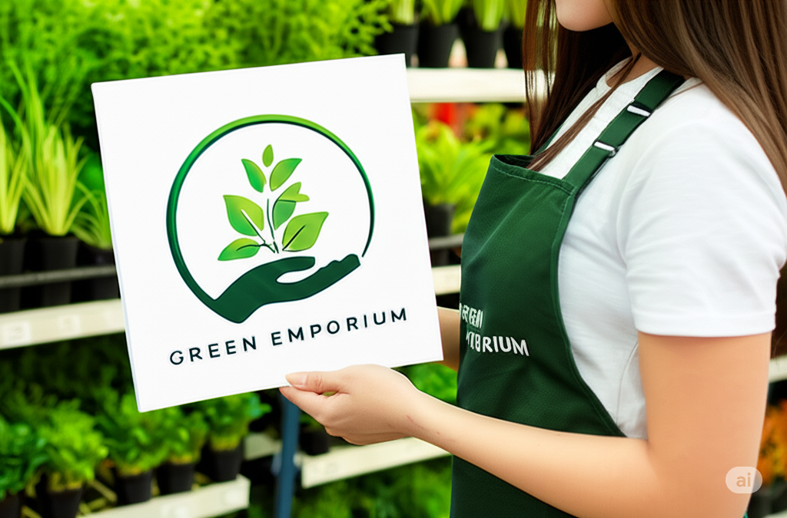

Bem-vindo à Green Emporium
🌿 Green Emporium é um espaço dedicado ao bem-estar, à saúde e ao planeta. Mais do que uma loja, somos um ponto de conexão entre você e um estilo de vida mais natural e consciente. Aqui, você encontra uma seleção cuidadosa de alimentos orgânicos, cosméticos naturais, produtos sustentáveis e itens que valorizam o cuidado com o corpo e o meio ambiente. Acreditamos que pequenas escolhas diárias podem transformar o mundo — começando pela forma como consumimos. Nosso compromisso é oferecer produtos de qualidade, com origem transparente, e inspirar hábitos mais saudáveis, práticos e sustentáveis para todos os dias. 🌱 Green Emporium — natural como a vida deve ser.
